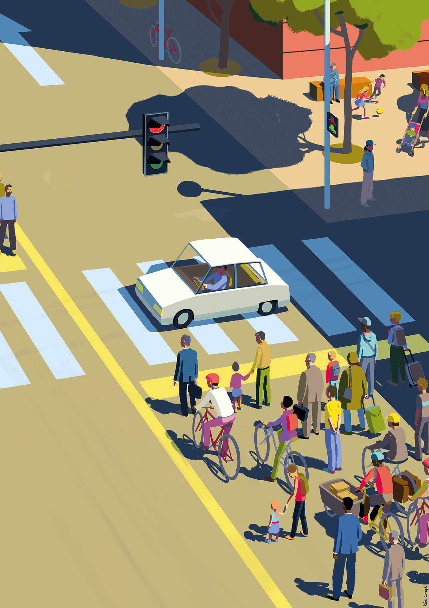

Morceau “Bihar” (Demain) composée par Jurgi Ekiza. Créé pour le projet “ET SI…” et qui présente la particularité d’avoir été intégralement façonné artisanalement en 4 jours et en confinement.
Parole et traduction "Bihar" (Demain) de Jurgi Ekiza
Et si la révélation soudaine de grande vulnérabilité de nos sociétés avait été l’impulsion décisive pour remettre les pieds sur terre ? Et si la découverte imprévue que ce système pouvait être stoppé sans mettre en danger notre vie mais en la protégeant, nous avait conduits à envisager l’avenir sous un autre angle ? Et si la prise de conscience massive que la globalisation capitaliste menaçait, avec son environnement, l’Humanité elle-même, nous avait convaincus de mettre en route mille projets de territoires souverains, solidaires et soutenables pour la remplacer ?
Nous sentions bien que d’autres crises, aux origines multiples, allaient succéder à celle-ci. Celle du coronavirus avait suivi de gigantesques incendies en Australie, et accompagné une invasion massive de criquets en Afrique de l’Est ainsi qu’une sécheresse exceptionnelle en Europe centrale. Le jour du dépassement de notre empreinte écologique globale survenait chaque année plus tôt, et les inégalités avaient explosé : 2 153 milliardaires détenaient plus d’argent que 60 % de la population mondiale. Nous ne pouvions continuer avec un modèle de développement aussi insoutenable sans que la nature nous en présente la facture.
Comment dès lors s’attaquer aux causes de ces crises pour en limiter l’ampleur et le nombre, et dans le même temps nous préparer aux conséquences de celles qui surviendraient pourtant, rendues inévitables par les dégâts déjà causés ?
Nous avions la réponse, elle était là, sous nos yeux. Elle se construisait, à travers ces milliers d’alternatives embryonnaires portées par la société civile et par ces centaines de collectivités locales qui commençaient à expérimenter d’autres politiques : tout cela permettait, aux échelons pertinents, de relever le défi de la sobriété et celui de la résilience, de jouer la carte de l’atténuation et celle de l’adaptation.
Délaissant nucléaire, pétrole et charbon, qui nécessitaient concentration de capitaux et d’emplois, centralisation et militarisation du système énergétique, nous avions mis en route des politiques d’économies massives d’énergie, de sobriété conviviale et de développement des énergies renouvelables. Elles se révélaient bien plus efficaces et mieux acceptées quand elles étaient ainsi ramenées au plus près des territoires. Les citoyen·nes et les communes se les appropriaient plus facilement. Les politiques d’isolation thermique des bâtiments, de transports doux ou collectifs des marchandises et des personnes, de production d’énergie renouvelable, étaient mieux adaptées et plus performantes au plus près des reliefs, climats et réalités géographiques de chaque région, au plus près des matériaux et ressources spécifiques à chaque territoire.
La recherche de la souveraineté alimentaire de chaque territoire en avait radicalement transformé les politiques d’aménagement, la vie sociale, et même les paysages. Les campagnes étaient devenues bien plus peuplées et attractives, ne serait-ce que parce que le modèle d’agriculture paysanne et durable, l’agro-écologie, les circuits courts de transformation et de distribution nécessitaient beaucoup plus de bras et répartissaient l’emploi à travers le territoire.
La relocalisation de l’économie et les politiques volontaristes de reconversion et de métamorphose écologique avaient créé des millions d’emplois. Une de leurs nombreuses qualités était leur caractère non délocalisable, et là encore leur répartition à travers tout le territoire. Cela avait ainsi contribué à la déconcentration urbaine et à la revitalisation de zones autrefois dépeuplées. Les monnaies locales, pivot de cette relocalisation, étaient un des nombreux outils qu’avaient les citoyen·nes pour orienter la nouvelle économie dans une direction toujours plus écologique et solidaire. La population était déterminée à remettre l’économie à sa place : elle devait être subordonnée aux besoins humains réels. L’exact contraire de ce qu’elle était quand le coronavirus l’avait mise en sommeil.
Ce modèle économique d’un nouveau genre était très largement circulaire : il multipliait les lieux et activités de réparation, de réemploi, de recyclage, d’auto-production et rendait les communautés et leurs habitant·es le plus autonomes possible.
La politique de santé publique elle-même se portait bien mieux depuis qu’elle avait été profondément décentralisée. La grande crise du coronavirus avait montré le besoin de répondre à l’épidémie territoire par territoire, ce qui n’avait pas exclu, bien au contraire, la solidarité entre ces différents territoires, entre les continents eux-mêmes. Les politiques de prévention quant à elles étaient d’autant plus efficaces qu’elles s’adaptaient de manière spécifique aux réalités du terrain, aux habitudes sociales, culturelles, aux traditions alimentaires locales.
D’une manière générale, la population était en bien meilleure santé depuis que le monde avait fait le choix de la sobriété conviviale et de la diversité territoriale : moins sédentaires grâce à des modes de transport plus actifs, mangeant moins de viande et plus d’aliments locaux et naturels, les gens étaient dotés ainsi d’un microbiote enrichi et diversifié, et profitaient d’un air et d’un environnement plus sains. Le mode de vie était moins stressant et moins aliénant depuis la mise en place des politiques de partage radical du travail et des richesses. Et depuis que les personnes étaient devenues actrices d’une démocratie locale, de leurs loisirs, de leurs rendez-vous culturels et festifs.
En effet, non seulement la vie démocratique s’était elle aussi profondément relocalisée mais elle s’était également enrichie et diversifiée. Dans un monde régi par le principe de subsidiarité, les conseils municipaux avaient acquis des pouvoirs supplémentaires et des compétences diverses. On avait procédé à la création de conseils de quartier chargés de la gestion publique, coordination et animation au plus près des citoyen·nes.
Des comités des fêtes regroupaient les jeunes d’un même village, voire d’un quartier, et même d’une grande rue dans les communes importantes. Ils se chargeaient d’organiser les fêtes annuelles, qui se déroulaient plusieurs jours d’affilée entre juin et septembre, ainsi que diverses activités culturelles, sociales et festives le restant de l’année. Danses, chants, musique, théâtre, poésie, arts plastiques et même activités sportives ou gastronomiques revisitées constituaient une vie culturelle dense, réinventée. La population en était plus actrice que spectatrice, avec un rapport de production ou d’inter-action plus que de consommation.
Cela avait donné une explosion d’activités et de rendez-vous variés et populaires, joyeux et débridés, tout au long de l’année et sur tout le territoire. Et cela avait fortement contribué à déconstruire l’ancien imaginaire consumériste et individualiste, à valoriser l’entraide et la solidarité, à privilégier les liens aux biens. L’accueil des migrant·es par exemple était désormais vécu comme une opportunité, un enrichissement pour les communautés installées, non comme une menace ou une source potentielle de tensions.
Ces échelons basiques de mise en responsabilité, d’initiation à l’organisation, à l’animation et à la vie démocratique formaient dès le plus jeune âge des millions de citoyen·nes à la vie publique et à l’action collective. Cet apprentissage démocratique de masse, préparait peu à peu certain·es à gérer les niveaux de coordination et de gestion inter-territoriaux, puis inter-continentaux. Nul besoin pour cela d’être issus des anciennes classes dirigeantes ou des grandes écoles spécialisées et technocratiques.
Car la crise sanitaire de 2020 avait amené les populations à adopter deux attitudes parallèles et complémentaires. D’abord, elles avaient appris à rompre avec le hors-sol de la modernité capitaliste, à reprendre possession de leurs conditions de vie, au plus près de leur territoire, protégeant la planète dans le moindre de ses recoins. Et puis elles avaient décidé de dire non à la mise en concurrence des peuples entre eux, construisant dès lors une « communauté de destin de tous les humains en lien inséparable avec le destin bio-écologique de la planète Terre », comme l’avait formulé le philosophe Edgar Morin, contemporain de l’époque où eut lieu cette bifurcation salvatrice.
Et si demain avait commencé à germer en 2020 ? Et si demain voyait s’épanouir ces fleurs que chacun, chacune, avait aujourd’hui commencé à arroser ? Et si demain naissait partout où elles poussaient ? Et si demain… c’était ici ?
Rémi Chayé est un réalisateur et animateur français. Son premier film, Tout en haut du monde, a été nominé par trois fois au Festival du film francophone d’Angoulême et au Festival international du film d’animation d’Annecy, où il a remporté le prix du public. À la rentrée, son film Calamity, une enfance de Martha Jane sortira en salle.
Remi_Chaye.jpeg
Txetx_Etcheverry.jpeg
Txetx Etcheverry milite sur les questions d’urgence climatique et de justice sociale. Travaillant pour ELA, syndicat ouvrier majoritaire en Pays basque, il est co-fondateur de Bizi, d’Alternatiba et d’Action Non-Violente COP21.
www.enbata.info/auteur/txetx-etcheverry
Jurgi-Ekiza.jpeg
Jurgi Ekiza, membre actif de la scène basque, mène de front ses projets principaux (le trio rock willis drummond et son projet solo ekiza), un side-project (erabatera), et de multiples collaborations, et ce, toujours dans sa langue de cœur, l’euskara. Il est l’auteur-compositeur et l’interprète du morceau BIHAR (demain), créé pour le projet “ET SI…” et qui présente la particularité d’avoir été intégralement façonné artisanalement en 4 jours et en confinement.